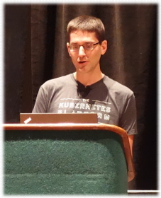

Handling the Kubernetes symbolic link vulnerability
A year-old bug in Kubernetes was the topic of a talk given by Michelle Au and Jan Šafránek at KubeCon + CloudNativeCon North America, which was held mid-December in Seattle. In the talk, they looked at the details of the bug and the response from the Kubernetes product security team (PST). While the bug was fairly straightforward, it was surprisingly hard to fix. The whole process also provided experience that will help improve vulnerability handling in the future.
The Kubernetes project first became aware of the problem from a GitHub issue that was created on November 30, 2017. It gave full detail of the bug and was posted publicly. That is not the proper channel for reporting Kubernetes security bugs, Au stressed. Luckily, a security team member saw the bug report and cleared out all of the details, moving it to a private issue tracker. There is a documented disclosure process for the project that anyone finding a security problem should follow, she said.
Background

In order to understand the bug, some background on volumes in Kubernetes is needed, much of which can also be found in a blog post by Au and Šafránek. They put up an example pod spec (which can be seen in the slides [PDF]) that was using a volume. When that pod gets scheduled to a node, the volume will be mounted so that containers in the pod can access it. Each container can specify where the volume will be mounted inside the container. A directory is created on the host filesystem where the volume is mounted.
When the container starts, the kubelet node manager needs to tell the container runtime about the volume; both the host filesystem path and the location in the container where it should be bind mounted are needed. In addition, a container can specify a subdirectory of the location where the volume is mounted in the container using the subPath directive. But subPath was subject to a classic symbolic-link race condition vulnerability.
A container could symbolically link anything to a subPath name in its view of the volume. A subsequent container that used the subPath name would be using a link controlled by the owner of the pod. Those links are resolved on the host, so linking the subPath name to / would provide access to the root directory on the host; game over.
Šafránek demonstrated the flaw. He showed that it allows access to the root directory of the host, which means that the whole node is compromised. For example, it gives access to the Docker socket so an attacker can run anything in the containers, access any secrets used by the containers, and more. All of that comes about because Kubernetes does not check for symbolic links.
Working out a solution
The problem was reported just before KubeCon Austin, so the PST brainstormed on solutions at that gathering. The first, "naive", idea was simply to resolve the full path, then validate that it still points inside the volume. But there is a time of check to time of use (TOCTTOU) race condition in that scheme. The user can modify the directories after the check but before they are handed to the container runtime.
The next idea was to freeze the filesystem while validating the path and handing it to the container runtime. For Windows, CreateFile() can be used to lock each component of the path until after the runtime mounts it, but something different was needed for Linux. Bind mounting the volume to some Kubernetes directory, outside of user control, and then handing that off is a safe way to get it to the runtime, but it still leaves race conditions. After any symbolic links are resolved and after the path has been validated to remain inside the volume are two points where a user could switch the path to contain a symbolic link.
The /proc filesystem contained a clue that was used for the actual solution that was implemented. The links under /proc/PID/fd can reliably be used to bind mount a file descriptor corresponding to the final component of the subPath. The volume directory is opened, then each component of the subPath is opened using openat() while disallowing following symbolic links and validating that the path is still within the volume. The file descriptor file in /proc of the final component is then bind mounted to a safe location and handed off to the container runtime. That eliminates the races and implements a scheme that is not dependent on the underlying filesystem type.
Making the fix
It took a fair amount of time to get the fix out there; there were lots of end-to-end tests that needed to be developed and run on both Linux and Windows. But, since Kubernetes is developed in the open, how could this fix be developed in secret? The answer is that a separate repository, kubernetes-security, was used. Only the PST can normally access it, but the PST can give temporary access to those working on the fix. Au and Šafránek lost their access after the fix was released; "we have no idea what's going on there now", Šafránek said.
The development and testing process is similar to that of the open kubernetes repository, but the logs of tests and such for kubernetes-security go to a private bucket that only Google employees can access. Šafránek works for Red Hat in Europe, so sometimes he had to wait for Au, who works for Google in the US, to wake up so that he could find out what went wrong for a test run.
The flaw was disclosed to third-party Kubernetes vendors on the closed kubernetes-distributors-announce mailing list one week before it was publicly disclosed. On March 12, CVE-2017-1002101 was announced, which was roughly four months after it was reported. Kubernetes 1.7, 1.8, and 1.9 were updated and released on that day. The timeline and more can be found in the public post-mortem document.
Au went over some "best practices" for avoiding these kinds of problems. To start with, do not run containers as the root user; containers running as another user only have the same access as that user. That can be enforced by using PodSecurityPolicy, though containers will still run in the root group; the upcoming RunAsGroup feature will address that shortcoming. The security policy can also be used to restrict volume access, though that would not have helped for this particular vulnerability.
Using sandboxed containers is something that is being investigated for future Kubernetes releases. Using gVisor or Kata Containers will provide another security boundary. That is in keeping with a core principle that there should be at least two security barriers around untrusted code. For this vulnerability, a sandbox could have prevented access to the host filesystem. Au said she expects to see some movement on container sandboxes over the next year or so.
She started her talk summary with a reminder to follow the project's security disclosure process. She also suggested that Kubernetes and other projects be "extra cautious" when handling untrusted paths. Symbolic-link races and TOCTTOU are well-known dangers in path handling. In addition, she recommended setting restrictive security policies and using multiple security boundaries.
In answer to a question, Au said that most of the four months was taken up by development and testing, some of which was slowed down by the end-of-year holiday break. About two weeks were taken up with the actual release process. When asked about what could improve for the next CVE, Šafránek said that getting access to the private logs is important; Au said that it is being worked on. She also pointed to the post-mortem document as a good source for improvement ideas.
[I would like to thank LWN's travel sponsor, The Linux Foundation, for
assistance in traveling to Seattle for KubeCon NA.]
| Index entries for this article | |
|---|---|
| Security | Containers |
| Security | Vulnerability response |
| Conference | KubeCon NA/2018 |
Posted Dec 19, 2018 21:33 UTC (Wed)
by jra (subscriber, #55261)
[Link] (19 responses)
At the very least Linux needs a flag bit that allows applications to tell syscalls to completely ignore symlinks and fail pathnames containing them. O_NOFOLLOW doesn't do what anyone wants it to do, unfortunately.
Posted Dec 19, 2018 22:02 UTC (Wed)
by nopsled (guest, #129072)
[Link]
Posted Dec 20, 2018 11:58 UTC (Thu)
by domenpk (guest, #12382)
[Link] (16 responses)
/proc/sys/fs/protected_symlinks
I wonder if any distro has this enabled by default.
Posted Dec 20, 2018 12:17 UTC (Thu)
by Trou.fr (subscriber, #26289)
[Link]
Posted Dec 20, 2018 12:20 UTC (Thu)
by zdzichu (subscriber, #17118)
[Link] (14 responses)
Posted Dec 20, 2018 18:15 UTC (Thu)
by rweikusat2 (guest, #117920)
[Link] (13 responses)
Posted Dec 20, 2018 19:49 UTC (Thu)
by jerojasro (guest, #98169)
[Link] (10 responses)
Your approach of demanding "complete avoidance of mistakes" from application authors does not work in the real world, as recurring security issues stemming from the same "feature" show. It's way easier to fix the environment and eradicate the issue in a single place, instead of educating tons of developers and expect them to remember and never make the same mistake again...
(FWIW, I'm mostly paraphrasing/matching what I read at: https://rachelbythebay.com/w/2018/05/13/dates/ )
Posted Dec 20, 2018 19:59 UTC (Thu)
by rweikusat2 (guest, #117920)
[Link] (7 responses)
Posted Dec 20, 2018 22:23 UTC (Thu)
by jerojasro (guest, #98169)
[Link] (1 responses)
Yes, we should pay attention, learn our craft, be mindful. But even so, better to, as Rachel (the author of the article I posted) says, design the potential for error out of the system.
Posted Dec 21, 2018 21:22 UTC (Fri)
by rweikusat2 (guest, #117920)
[Link]
Posted Dec 21, 2018 2:52 UTC (Fri)
by dvdeug (guest, #10998)
[Link] (4 responses)
Posted Dec 21, 2018 23:09 UTC (Fri)
by rweikusat2 (guest, #117920)
[Link] (3 responses)
BTW, the actual Kubernetes problem was even sillier than a TOCTOU race as the faulty code didn't even attempt to verify that the untrustworthy input it acted upon was valid.
[*] Assuming the whole system was locked while it ran, the information would still only be approximate as it could (and likely would) change as soon as the system was again unlocked. Hence, there's no point in even trying as the result is unreliable either way.
Posted Dec 22, 2018 6:32 UTC (Sat)
by dvdeug (guest, #10998)
[Link] (2 responses)
If one doesn't act on provided information, it was useless to provide it. If one does act on it, in any way, there's a potential for a race condition. You said "And I would indeed "demand" complete avoidance of that if I was in the position to demand anything here, as there's nothing particularly difficult about understanding that this approach is broken." If the approach is broken and should be completely avoided, show me how to avoid it here, or argue that du, as well as virtually every other file tool* for any multiprocessing system, is inherently broken. Otherwise you've got to accept that complete avoidance is impractical.
* For example, rm; an attacker could potentially watch for rm to be run, move the file out of the way, and move it back after rm ran. The timing would be hard, but it's at least theoretically possible. Should rm be avoided?
Posted Dec 27, 2018 19:41 UTC (Thu)
by rweikusat2 (guest, #117920)
[Link] (1 responses)
Posted Dec 27, 2018 23:32 UTC (Thu)
by dvdeug (guest, #10998)
[Link]
Operators are often programs, frequently written in shell. If they use rm or du, they are subject to these types of attack. Even when operators are human, the fact that they literally can not operate these programs without getting into these race conditions is a concern if this approach is clearly broken.
Posted Dec 20, 2018 21:50 UTC (Thu)
by joncb (guest, #128491)
[Link] (1 responses)
Symlinks are such an important part of operating system functionality that i'm not sure how much of linux software would still run if you removed it... including systemd.
Having said that, improving the ergonomics of certain calls to turn them into pits of success instead of pits of failure seems like a valuable endeavor but i don't entirely know what that means from a practical standpoint.
Posted Dec 20, 2018 22:07 UTC (Thu)
by sheepgoesbaaa (guest, #98005)
[Link]
Posted Dec 21, 2018 0:56 UTC (Fri)
by jra (subscriber, #55261)
[Link] (1 responses)
And you know what - they're mostly right in normal use cases :-). Most "normal" programmers don't expect a resource to get altered outside of their own program.
This is the core problem with people getting MT-programming right. Most people's minds just don't work that way (paranoia about resource modification between every possible access).
This is why the handle-based approach got retrofitted into POSIX via the XXXat() interfaces to get around the problem with the normal interfaces. The problem was the old interfaces weren't removed, and so everyone mostly kept using them (they work, right!).
Handle based pathname traversal (or chdir() into a parent directory to pin the inode) is the only way to fix a filesystem with arbitrary symlinks to make things safe, but almost no application code does that correctly (Samba didn't for the longest time, does now).
If you have an interface that's really hard to use safely, I'm going to argue it's the interface that's the problem, not the application programmers.
Posted Dec 28, 2018 6:23 UTC (Fri)
by cyphar (subscriber, #110703)
[Link]
Unfortunately just using *at(2) isn't really sufficient. You would need to do full path lookups (as in at least one openat(2) for each component of your path) in userspace with some pretty ugly checking (fstatat(2) or potentially readlink("/proc/self/fd/$foo")) in order to verify you haven't been thrown out of where you expect.
This is is why I am working on adding O_BENEATH and similar openat(2) flags so the kernel will do the checks for you[1] (since the kernel can actually do checks somewhat-atomically within VFS). Hopefully it'll remove some of these really frustrating hurdles.
Posted Dec 20, 2018 17:41 UTC (Thu)
by cyphar (subscriber, #110703)
[Link]
This is precisely what I'm trying to do with the O_THISROOT patchset (which includes things like O_NOSYMLINKS and O_BENEATH) -- in fact these Kubernetes CVEs (and the fairly dodgy way they were fixed) inspired me to work on it (among other reasons).
Posted Jan 7, 2019 21:13 UTC (Mon)
by zoobab (guest, #9945)
[Link]
At least next time, post it publicly on a server where anybody else cannot intervene to censor it.
Handling the Kubernetes symbolic link vulnerability
Handling the Kubernetes symbolic link vulnerability
Handling the Kubernetes symbolic link vulnerability
and
/proc/sys/fs/protected_hardlinks
Handling the Kubernetes symbolic link vulnerability
Handling the Kubernetes symbolic link vulnerability
https://github.com/systemd/systemd/blob/master/sysctl.d/5...
Handling the Kubernetes symbolic link vulnerability
Handling the Kubernetes symbolic link vulnerability
This is not about "misuse" of anything, the underlying problem is called "a TOCTOU race", the pattern of that being
Handling the Kubernetes symbolic link vulnerability
And I would indeed "demand" complete avoidance of that if I was in the position to demand anything here, as there's nothing particularly difficult about understanding that this approach is broken.
Handling the Kubernetes symbolic link vulnerability
Handling the Kubernetes symbolic link vulnerability
Handling the Kubernetes symbolic link vulnerability
Handling the Kubernetes symbolic link vulnerability
Handling the Kubernetes symbolic link vulnerability
Handling the Kubernetes symbolic link vulnerability
(aka "a red herring"). Dito for rm.
Handling the Kubernetes symbolic link vulnerability
Handling the Kubernetes symbolic link vulnerability
Handling the Kubernetes symbolic link vulnerability
Handling the Kubernetes symbolic link vulnerability
Handling the Kubernetes symbolic link vulnerability
Handling the Kubernetes symbolic link vulnerability
Handling the Kubernetes symbolic link vulnerability